Uno de los objetos mas importantes dentro de la crianza, son los Brazales, y la Piedra eterna, con estos objetos puedes hacer que el pokemon herede las caracteristicas que tu prefieras, a continuacion les explico como va.
Hay diferentes tipos de Brazales, y son importantes ya que al equipar un brazal en especifico en unos de los padres, estos ayudan a heredar al 100% una estadistica a la cria. Dato extra: Tambien los padres pueden heredar al 100% una estadistica si ambos cuentan con la misma cantidad de IV's en la misma estadistica.
¿Pero entonces, cuales Brazales debo usar?, a continuacion muestro los diferentes tipos de Brazales y que IV dan.
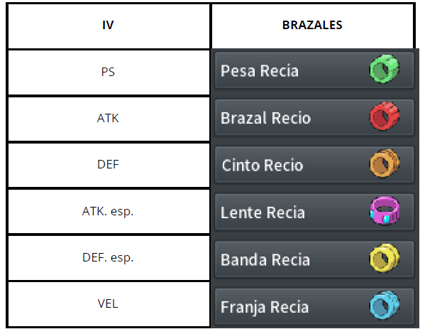La piedra eterna es un objeto que nos va ayudar a pasar la naturaleza deseada de un Pokemon a su cria, siempre cuando este la tenga equipada, a continuacion les muestro las distintas naturalezas:

La habilidad oculta, en la mayoria de los casos es esencial para el competitivo, es muy ideal ya que proporciona una ventaja en cierto tipo de casos u ocasiones, tambien se puede heredar a la cria si es que algunos de los padres posee consigo dicha habilidad oculta, para un 6x31 es necesario que uno de los padres de la primera cria con naturaleza la posea.
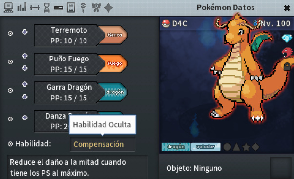Obviamente es necesario que ambos padres sean de diferente sexo, para que estos puedan criar (Excepto pokemones que no tienen genero).
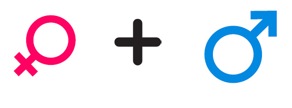Ahora si, empecemos con la crianza tomando como referencia a un Dragonite femenino 0x31, el genero puede variar asi que solo cambien de genero de femenino a masculino y viceversa ya sea el caso. Se recomienda trabajar con un genero aleatorio en la primera cria, para evitar no gastar tanto ya que el costo por elegir genero es de 5k.
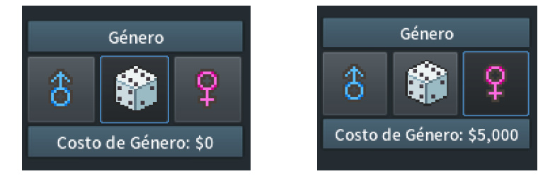Empecemos con dos dragonite, uno con la naturaleza deseada, que tendra una piedra eterna y otro con 31 de IV en HP con el Brazal Recio
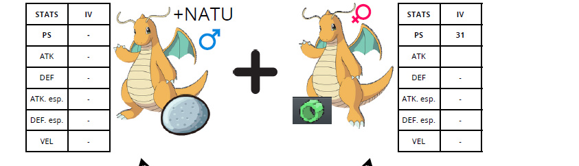Nos dara como resultado un Dragonite con la naturaleza deseada y 31 de IV fijos en HP, a este Dragonite le seguimos equipando la piedra eterna, y lo juntamos con un Dragonite con 31 IV en HP, y 31 en ATK, equipado con Cinto recio, de esa forma heredara si o si 31 IV en esas 2 estadisticas.
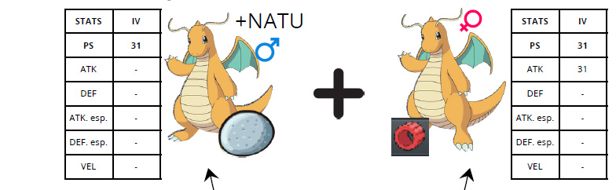Repetimos el proceso, juntandolo con otro Dragonite que ahora tenga 31 de IV, tanto en HP, ATK y DEF que tenga Lente Recia Equipada
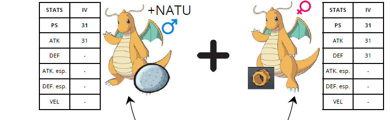Seguiremos repitiendo el proceso, cada vez juntandolo con Dragonites que posean los IV que quieres que el tuyo herede, manteniendo la naturaleza y los IV
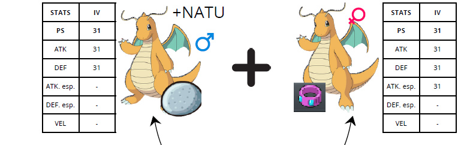 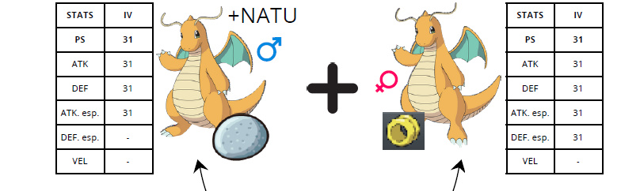 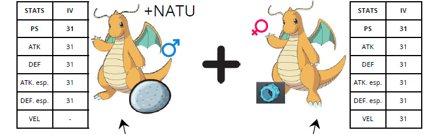Dara como resultado un poderoso Dragonite 6x31 con naturaleza deseada, este proceso es largo y costoso, se recomienda minimo un 1m de Pokedolares, pero el sacrificio y esfuerzo da sus frutos, y podras hasta revender y ganar el doble de lo que pusiste. Todo ya depende de ti
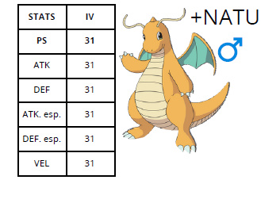No necesariamente tiene que ser un pokemon en su ultima etapa evolutiva, da igual si esta en su primera, segunda o tercera (Excepto por los Pokemon especificos que son bebes y no pueden criar
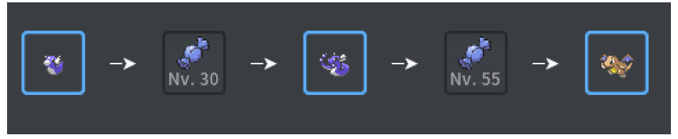